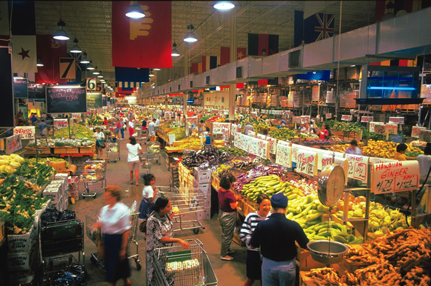

Decatur is technically its own city, but is just 7 miles from Atlanta, so it’s part of that sprawling metropolitan area. In recent years, it has experienced a renaissance and is now a trendy outpost with all the benefits of urban living: public transit, arts, restaurants and historic buildings.
If you want to live in a city, but still feel like you’re part of a neighborhood, Decatur has a lot to offer.
Do you live in Decatur? Have you visited? Please post your comments below.
Population: 18,251
County: DeKalb
Climate: hot and humid summers; mild winters
Cost of living index: 118.1
Median home price: $312,400
Alternative energy: net metering; no other incentives
Don’t miss: Agnes Scott College in the historic district
|
 DEKALB VISITORS BUREAU The DeKalb Country farmers market offers more than 100,000 square feet of fresh food. |
|
|